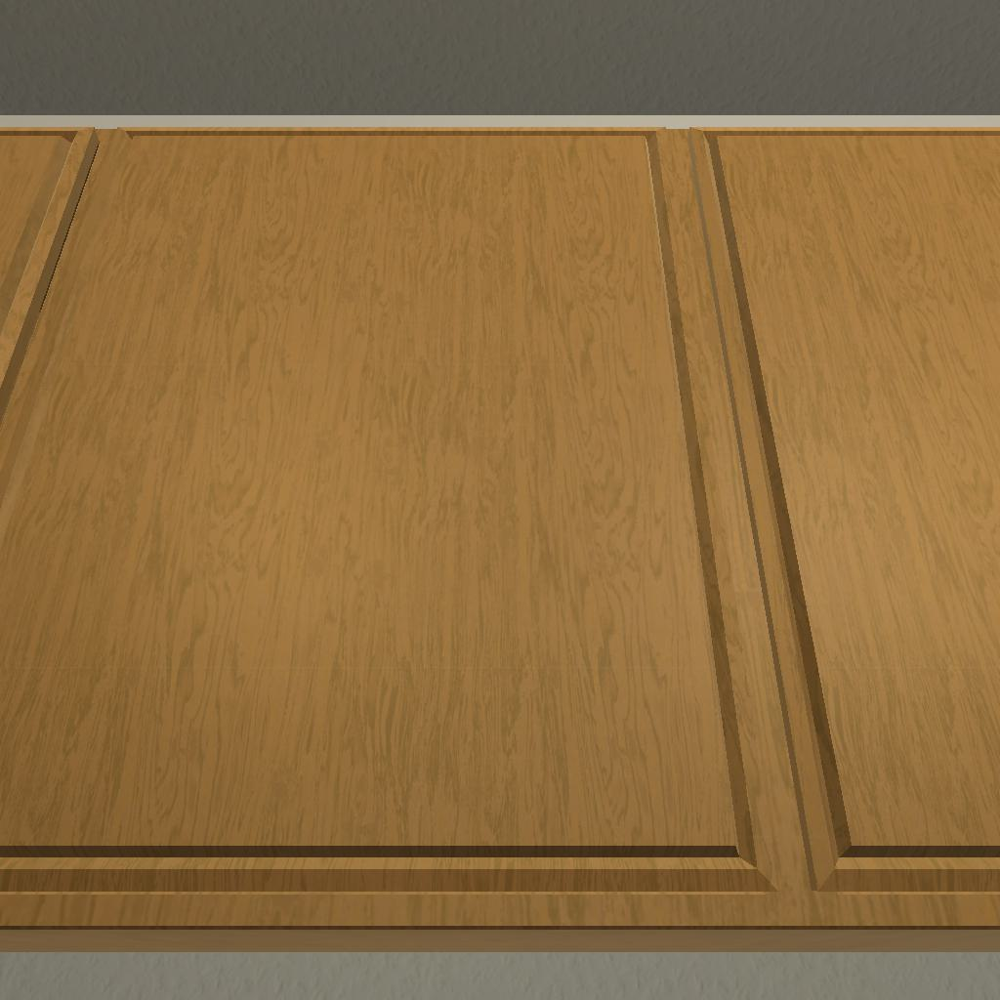

---------------------------------------------------------task: 20---------------------------------------------------------
--------------------------------------------------------------------------------------------------------------------------------------------------------------------
--------------------------------------------------------------------------------------------------------------------------------------------------------------------
Step:--------------------------------------------------------------------------17-------------------------------------------------------------------------------
----------------------------------------
VLM Prompt:
Image1:
Image2:
Image3:
**Instruction**
1. Analyze the provided images to identify all visible household objects and compare the difference between images (e.h. whether the object is opened or not and taken on hand or not), focusing on those relevant to the task description "heat some apple and put it in garbagecan."
2. Use the analysis of images and the task hint "The agent must find an object of the desired type, pick it up, go to a microwave, heat the object with the microwave, then find the correct location to place it, and put it down there. The agent does not need to use the microwave button or open the microwave to heat the object, and the agent just needs to do action that is "heat the object with the microwave"." to answer the question: what is the most reasonable action in the choices for the task description "heat some apple and put it in garbagecan"?
3. Decide and write the answer using the template: The answer is: (i): , where i is the real number. If there is no desired object in images, search every place based on **Initial Observation** to find the object. And if no one is exactly correct, choose a similar answer.
**Initial Observation**
You are in the middle of a room. Looking quickly around you, you can see cabinet (1-18), countertop (1-4), sink (1), drawer (1-7), sinkbasin (1), coffeemachine (1), microwave (1), garbagecan (1), stoveburner (1-4), toaster (1), fridge (1)
**Answer Choices**
(1): go to countertop 1
(2): go to cabinet 3
(3): go to cabinet 5
(4): go to sink 1
(5): go to cabinet 6
(6): go to drawer 1
(7): go to drawer 2
(8): go to sinkbasin 1
(9): go to cabinet 7
(10): go to cabinet 8
(11): go to coffeemachine 1
(12): go to microwave 1
(13): go to cabinet 9
(14): go to countertop 2
(15): go to cabinet 10
(16): go to drawer 3
(17): go to drawer 4
(18): go to garbagecan 1
(19): go to drawer 5
(20): go to cabinet 11
(21): go to cabinet 12
(22): go to cabinet 13
(23): go to cabinet 14
(24): go to stoveburner 1
(25): go to countertop 3
(26): go to stoveburner 2
(27): go to stoveburner 3
(28): go to stoveburner 4
(29): go to drawer 6
(30): go to cabinet 15
(31): go to cabinet 16
(32): go to cabinet 17
(33): go to cabinet 18
(34): go to toaster 1
(35): go to drawer 7
(36): go to countertop 4
(37): go to fridge 1
(38): open cabinet 1
(39): close cabinet 1
(40): examine cabinet 1
**Answer**
Let's think step by step by following the instructions.
----------------------------------------
----------------------------------------
Original Response:
The task is to heat an apple and put it in the garbage can. The images provided show a countertop with cabinets above, a coffee machine, a sink with a couple of limes or similar fruits, and a knife on the countertop. None of the images show an apple or a microwave. Therefore, we need to search for the apple and the microwave based on the initial observation.
Since apples are usually stored in a fridge, the most reasonable first action would be to go to the fridge to find an apple:
The answer is: (37): go to fridge 1
After finding the apple, the next step would be to go to the microwave to heat it:
The answer is: (12): go to microwave 1
Lastly, to complete the task, we would go to the garbage can to dispose of the heated apple:
The answer is: (18): go to garbagecan 1
However, since we can only select one action, the first step is to find the apple, which is most likely in the fridge. Therefore, the most reasonable action for the task description "heat some apple and put it in garbagecan" is to first find the apple:
The answer is: (37): go to fridge 1
----------------------------------------
----------------------------------------
>>> Refine Original VLM Response and Get Pure Action: go to fridge 1
After finding the apple, the next step would be to go to the microwave to heat it:
----------------------------------------
-----------------------------------------------------------------
Running time: 69.76777839660645 seconds
Total Money: 12.710139999999997
-----------------------------------------------------------------
-----------------------------------------------------------------
Text Observation:Nothing happens.
-----------------------------------------------------------------
UNSUCCEED